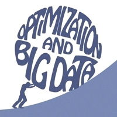
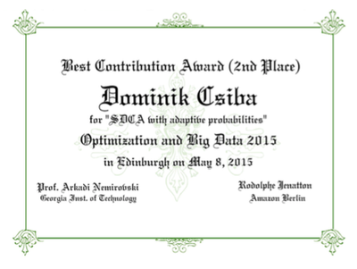

photo: Edinburgh city centre - view from Calton Hill
 The age of "big data" is here: data of unprecedented sizes is becoming ubiquitous, which brings new challenges and new opportunities. With this comes the need to solve optimization problems of unprecedented sizes. Machine learning, compressed sensing, social network science and computational biology are some of many prominent application domains where it is increasingly common to formulate and solve optimization problems with billions of variables. Classical algorithms are not designed to scale to instances of this size and hence new approaches are needed. These approaches utilize novel algorithmic design involving tools such as distributed and parallel computing, randomization, asynchronicity, decomposition, sketching and streaming. This workshop aims to bring together researchers working on novel optimization algorithms and codes capable of working in the Big Data setting.
Previous editions of the workshop:
> Optimization and Big Data 2013
> Optimization and Big Data 2012
Audience
Anyone interested in the newest developments in big data optimization algorithms, theory and applications.
Invited Speakers
Patrick Louis Combettes (Paris 6)
Jonathan Eckstein (Rutgers)
Garud Iyengar (Columbia)
Martin Jaggi (ETH Zurich)
Rodolphe Jenatton (Amazon Berlin)
Jakub Konecny (Edinburgh)
Francois Glineur (Louvain)
Donald Goldfarb (Columbia)
Robert Gower (Edinburgh)
Arkadi Nemirovski (Georgia Tech) - keynote
Zheng Qu (Edinburgh) - organizer
Peter Richtarik (Edinburgh) - organizer
Katya Scheinberg (Lehigh)
Mark Schmidt (UBC)
Contributed Deluxe Posters and Spotlight Talks
The workshop also invites the submission of contributed abstracts (up to 1000 characters, sent as pure text via email). All accepted abstracts will be presented in the form of deluxe posters and selected abstracts will in addition be given the space of 5 minutes for a spotlight oral talk.
There will be a Best Contribution Award for the best spotlight talk and
poster combination. The award is sponsored by
 (Amazon Berlin). Award committee: Prof Arkadi Nemirovski (Georgia Institute of Technology)
and Dr Rodolphe Jenatton (Amazon Berlin).
(Amazon Berlin). Award committee: Prof Arkadi Nemirovski (Georgia Institute of Technology)
and Dr Rodolphe Jenatton (Amazon Berlin).
Best Contribution Award
Winner: Rodrigo Mendoza-Smith (University of Oxford)
for "Expander l0 decoding" [slides] [poster] [paper]
Runner-up (2nd place): Dominik Csiba (University of Edinburgh)
for "Stochastic dual coordinate ascent with adaptive probabilites" [slides] [poster] [paper]

Dates
April 18, 2015: Submission deadline for abstractsSubmit to: peter.richtarik@ed.ac.uk
April 18, 2015: Early Bird registration
April 20, 2015: Notification of acceptance of contributed abstracts
Acceptance of abstracts will be done on a rolling basis. If you want to get confirmation of acceptance sooner to help you plan for the event, submit sooner.
April 25, 2015: Submission deadline for deluxe posters
Submit to: peter.richtarik@ed.ac.uk.
All posters will be put online prior to the start of the event.